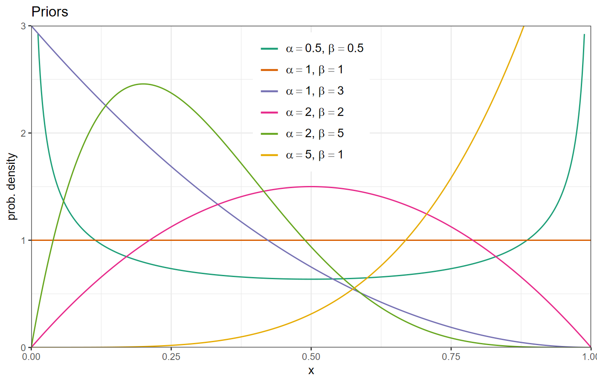
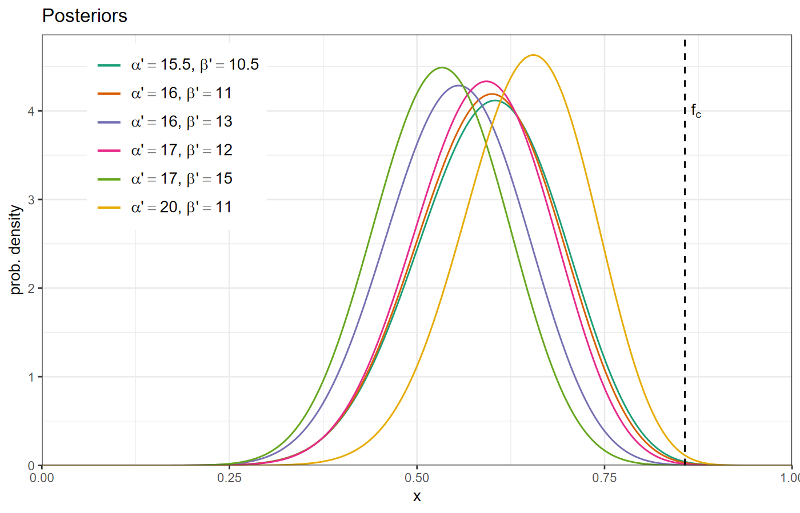
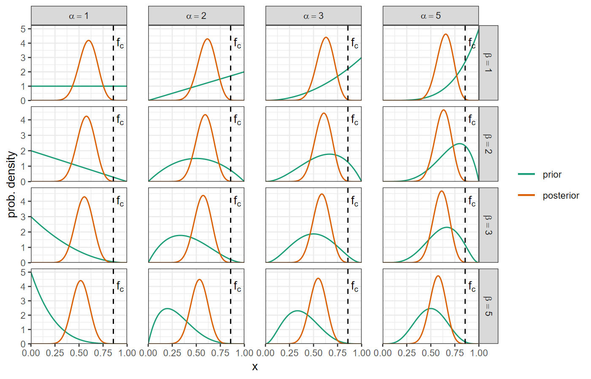

Accept the GitHub Classroom exercise at https://classroom.github.com/a/rpZxd6KB
Create a new RStudio project from the repository you create from the exercise assignment.
Make a histogram of your data with \(N_b\) bins, \(O_i = \text{# observations in bin}_i\)
Make a histogram of the theoretically expected counts \(E_i\)
Calculate test statistic \(\xi^2\)
\[ \Xi^2 = \sum_{i = 1}^{N_b} \frac{(E_i - O_i)^2}{E_i} \]
The probability that you would see \(\Xi^2 \ge\) what you observed, if \(H_0\) is true is
\[ 1 - \text{CDF}_{\chi^2_{\nu - 1}}(\Xi^2) = \int_{-\infty}^{\Xi^2} \chi^2_{\nu - 1}(x) \mathrm{d}x \]
Sort your data from smallest to largest. The empirical cumulative distribuion \(F_N(x)\) is given by the pairs \((x_i, i / N)\) with \(y\) range from 0 to 1.
Calculate \(F(x)\): CDF for the theoretical distribution
The test statistic is \(D\):
\[ D = \max_x \left | F_N(x) - F(x) \right | \]
Reject \(H_0\) at level \(\alpha\) if \(D > C_N(\alpha)\)
Test statistic \(f = k/N = 15/25 = 0.6\)
\(H_0\): \(f = f_c = 6/7 = 0.857\)
\(H_a\): \(f < f_c\), the resort is exaggerating.
Null distribution: Probability of \(X\) cloud-free days out of 25, if the true fraction of cloud-free days is \(f_c\)
\[ \mathbb{P}(X = k | f = f_c) = \left(25 \atop k\right) f_c^k (1 - f_c)^{25 - k} \]
\(p\)-value:
\[ \mathbb{P}(X \le 15) = \sum_{k = 0}^{15} \left(25 \atop k \right) f_c^k (1 - f_c)^{25 - k} \]
## [1] 0.001466964Likelihood for \(N\) days of observations is a binomial distribution:
\[ \mathbb{P}(X = k | f) = \left(N \atop k\right) f^k (1 - f)^{N - k} \]
Prior for \(f\):
The beta distribution has a special property:
It’s a conjugate prior to a binomial distribution.
a binomial likelihood and a beta prior always gives a different beta for the posterior:
\[ \begin{align} \mathbb{P}(f | X = k) = B(f |& \alpha' = \alpha + k, \\ & \beta' = N - k + \beta) \end{align} \]



Comments on Using \(\chi^2\) Tests